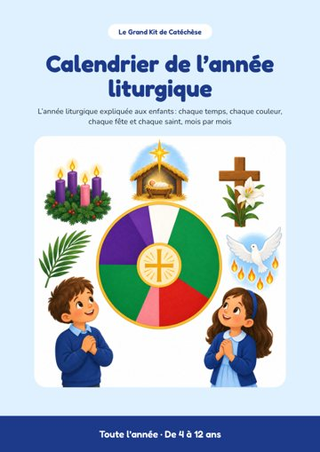

Votre calendrier

PDFCalendrier de l’année liturgique 2026-2027
Un mois par page, avec ses fêtes et une activité. 16 pages.
Télécharger le PDFOuvrir dans le navigateurPar où commencer
- Téléchargez le calendrier et imprimez-le en A4.
- Affichez le mois en cours dans la salle de caté ou à la maison.
- Chaque mois, découvrez les fêtes du mois avec les enfants.
Pour un usage personnel, en famille, en paroisse ou en classe. La revente et la redistribution sont interdites.